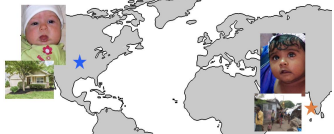

Minju Kim
Research Data Scientist, Cognitive Development Lab, Indiana University Bloomington
I use computer vision to study what infants actually see. Working with Linda B. Smith, I analyze large-scale egocentric video from head-mounted cameras to measure how the visual complexity of early experience changes with age.
I also collaborate on memory mechanisms in spiking neural networks for neuromorphic computing. I hold an M.S. in Data Science from Indiana University and a B.B.A. from Konkuk University, and I am applying to PhD programs.

Education
Aug. 2023 – May 2025
M.S. in Data Science (Applied Data Science)
Luddy School of Informatics, Computing, and Engineering, Indiana University, Bloomington, IN
Mar. 2018 – Feb. 2021
B.B.A. in Business Administration
Konkuk University, Seoul, South Korea
Mar. 2019 – Aug. 2019
Exchange Student (International Business)
Technische Hochschule Nürnberg Georg Simon Ohm, Nürnberg, Germany
Mar. 2016 – Feb. 2018
Undergraduate Studies (East Asian Studies & Logistics)
Sungkyul University, Anyang, South Korea
Research Experience
2024 – Present
Cognitive Development Lab, Indiana University Bloomington
PI: Linda B. Smith
Multi-level Visual Clutter in Infants' Egocentric Input (first-author)
- Built a pipeline to quantify visual clutter across ~500,000 head-camera frames from 40 infants (1–26 months) at three levels of visual complexity: edge density (low-level), Feature Congestion (mid-level; Rosenholtz et al., 2007), and SAM2-based segment counts as an object-level proxy for proto-objects.
- Found that infants' visual input is strongly biased toward low clutter, that this bias weakens gradually with age, and that clutter is multidimensional, with edge density nearly unrelated to object-level segment count.
- Presented as an oral talk at VSS 2026 (Elsevier/Vision Research Travel Award); first-author manuscript in preparation.
Infant Visual Statistics Across U.S. and Indian Communities
- Analyzed natural image statistics of infants' egocentric visual input across U.S. and Indian communities; presented first-author poster at the Midwest Computer Vision Workshop (2024).
- Contributed to a manuscript led by Philip McAdams on developmental changes in the edge statistics of everyday infant visual input (under review, Communications Psychology).
2025 – Present
Cross-Modal Neuromorphic Computing Collaboration
Multi-institution research collaboration
- Ran experiments comparing memory mechanisms (e.g., Hopfield networks, hierarchical gating) in spiking neural networks across visual (N-MNIST) and auditory (SHD) neuromorphic data in a multi-institution research team.
- Contributed to manuscript writing, proofreading, and architecture figures for an IEEE Computer article (in press) and a WiML @ NeurIPS 2026 poster.
Other Experience
May – Jun. 2023
Linguistic Data Annotator, Apple Siri Project
BeyondTech, Seoul, South Korea
- Evaluated and annotated 370+ language model training samples daily.
- Designed culturally nuanced Korean dialogues to improve AI conversational quality.
Publications
Accepted / In Press
Effiong, B., Rehman, J., Roy, S., Kim, M., Tseng, C.-Y., & Nkrumah, I. (in press). Modality-dependent memory mechanisms in cross-modal neuromorphic computing. IEEE Computer.
Under Review
McAdams, P., Colwell, A., Kim, M., & Smith, L. B. (under review). Developmental changes in the edge statistics of everyday infant visual input across two communities. Manuscript submitted to Communications Psychology.
In Preparation
Kim, M., McAdams, P., Colwell, A., & Smith, L. B. (in preparation). The visual world of infants and toddlers is not cluttered.
Presentations
Conference Talks
Kim, M. (2026, May 17). Developmental changes in visual clutter in infants' and toddlers' visual worlds [Oral presentation]. Vision Sciences Society (VSS) Annual Meeting, St. Pete Beach, FL, United States.


Posters
Effiong, B., Kim, M., Thasin, M., Rehman, J., Roy, S., Tan, V., & Nkrumah, I. (2026, December). Modality-adaptive memory gating with embedding replay for continual learning in spiking neural networks [Poster presentation accepted]. Women in Machine Learning (WiML) Workshop, co-located with NeurIPS 2026, Atlanta, GA, United States.
McAdams, P., Colwell, A., Kim, M., & Smith, L. B. (2026, May). Infant egocentric scene statistics are simpler than adult egocentric and canonical natural scenes [Poster presentation]. Vision Sciences Society (VSS) Annual Meeting, St. Pete Beach, FL, United States.
Kim, M., & Smith, L. B. (2024, September 16–17). Natural statistics of visual experience of infancy: US & India [Poster presentation]. Midwest Computer Vision Workshop, Indiana University Bloomington, Bloomington, IN, United States. Poster
Honors and Awards
2026
Elsevier/Vision Research Travel Award, Vision Sciences Society (VSS)
2025
Second Place, Case 4 (Multi-Agent Systems), 2025 Luddy Hackathon, Luddy School of Informatics, Computing, and Engineering, Indiana University Bloomington
2024
Faculty Assistance in Data Science (FADS) Fellowship, Indiana University Bloomington. Competitively selected for a faculty-led research project.
Teaching and Mentoring
Spring 2026
Research Mentor, CSCI-B657 Computer Vision Course Project
Luddy School of Informatics, Computing, and Engineering, Indiana University
- Co-advised (with Linda B. Smith) a three-student team developing an egocentric infant hand-detection and object-interaction pipeline using Cognitive Development Lab head-camera data.
- Met regularly with the team to set project direction, provided lab egocentric video data, advised on pipeline design (MediaPipe-based auto-labeling, CVAT annotation correction, YOLOv8 hand detection, DINOv2 one-shot object classification), and gave feedback on the final poster.
Summer 2024
Associate Instructor, CSCI-C 102: Great Ideas in Computing
Luddy School of Informatics, Computing, and Engineering, Indiana University
- Instructed 30+ students through hands-on programming labs covering Python, Arduino, HTML/CSS, and Java, developing foundational programming and computational thinking skills.
Selected Projects



Natural Statistics of Infant Visual Experience
Image statistics from infant head cameras across the U.S. and India.

Skills
Python, R, SQL, MATLAB, HTML/CSS, Git, Docker, Jupyter, NumPy, Pandas, OpenCV, Matplotlib, Seaborn, AWS, GCP
PyTorch, TensorFlow, Scikit-learn, CNNs (ResNet, U-Net), object detection, image segmentation, image classification, transfer learning, data augmentation, feature extraction, NLP, LLMs
Experimental design, model evaluation and benchmarking, cross-population analysis, large-scale egocentric image and video analysis, multimodal data processing, visual complexity analysis, scientific visualization (ParaView)
MongoDB, Snowflake, Neo4j, Cassandra, Tableau, Power BI, Gephi
Service and Memberships
Manuscript Reviewing
2026
Reviewer, NeurIPS 2026 Workshop on Continual World Models
Other Service and Activities
2026
Judge, Research Poster Competition, Center of Excellence for Women & Technology (CEWIT), Indiana University Bloomington
2024
Student Volunteer, American Association of Teachers of Korean (AATK) Conference, Indiana University Bloomington
2023 – Present
Mentee, Center of Excellence for Women & Technology (CEWIT), Indiana University Bloomington
Professional Memberships
2026
Korean-American Scientists and Engineers Association (KSEA)
2026
Korean Women in Science and Engineering (KWiSE), Indiana Chapter
Contact
Email: minjukim023@gmail.com
GitHub: github.com/minjukim023
LinkedIn: linkedin.com/in/minjukim023